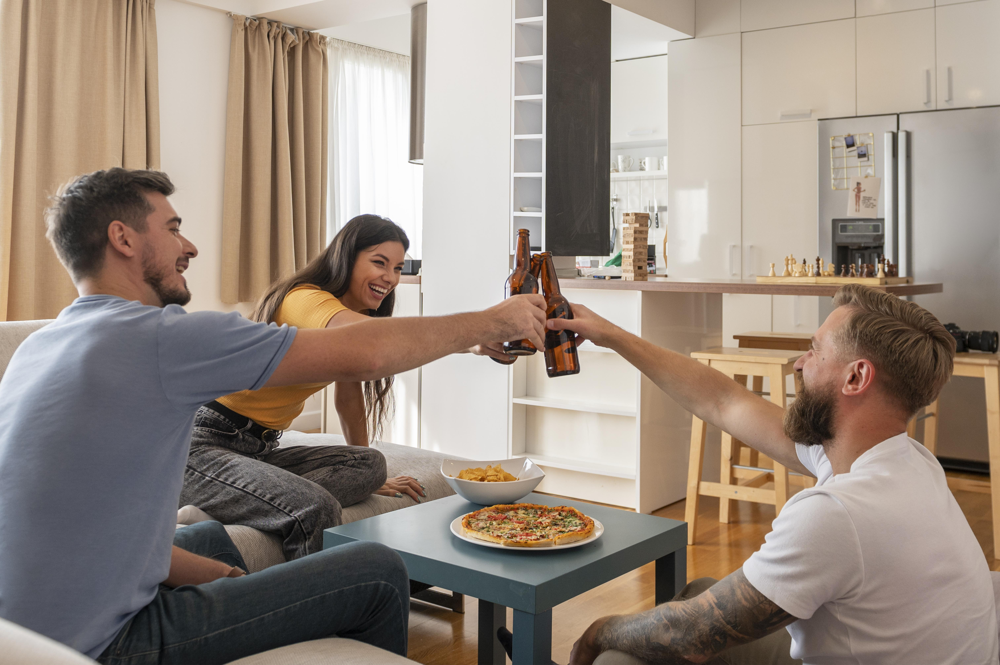

Dieta em eventos sociais
Estou de dieta, mas vou receber pessoas em casa. O que eu faço?
Publicado por Tamires Miranda Pereira da Cruz em 03/11/2023

Num processo de mudança de hábitos alimentares, durante a semana vai tudo bem, mas os desafios
aparecem quando o final de semana se aproxima.
Final de semana soa tão bom! Afinal, é momento de se desconectar um pouco do trabalho e de aproveitar em família. Mas por algum motivo a chegada do final de semana não é bem vista por aqueles que estão num processo de mudança de hábitos alimentares. É assim com você também?
Nesse momento a rotina muda completamente e acaba sendo difícil resistir quando se trata de alimentação. E agora, passado o isolamento social, as reuniões de pessoas, mais frequente, vem acompanhadas de mais comida.
Tenho certeza que você já se deparou com a situação de não saber o que fazer quando decide receber pessoas em casa. Mas já te adianto, fica tranquilo que eu vou te ajudar.
Primeira dica, aproveite o momento. Isso mesmo que você leu! Apesar da alimentação ser sinônimo de uma boa recepção, ninguém vai até a sua casa só para comer. Então aproveite o momento para saber se os seus familiares ou amigos estão bem e resgatar memórias. A comida é apenas um ponto, não o motivo do encontro.
Procure ter equilíbrio nas escolhas. Se você optar pelo fast food, tudo bem!
Apenas programe-se ao longo da semana e mantenha boas refeições. Tenha essa refeição como um momento pontual, será apenas uma refeição na semana inteira. Ninguém coloca tudo a perder desse jeito.
Tenha equilíbrio nas quantidades e combinações também. Se decidir pedir uma pizza, não precisa ser a de tamanho maior. Também avalie se realmente é preciso pedir refrigerante ou sobremesa. Você não precisa comer um pedaço de pizza para cada dia da semana, concorda?
Envolva toda a família no preparo. Essa é uma ótima forma de estreitar laços, criar memórias e utilizar ingredientes de qualidade, comida de verdade. Ah, e seja razoável, se você sabe que vai receber um casal com um filho, não tem o porquê fazer comida para dez pessoas.
Essas estratégias podem te ajudar a lidar melhor com a alimentação aos finais de semana, entendendo que num processo de reeducação alimentar o intuito é encontrar um equilíbrio, sem taxar alimentos de mocinhos e vilões e nem eliminar alimentos da sua vida, mesmo que não sejam tão saudáveis.